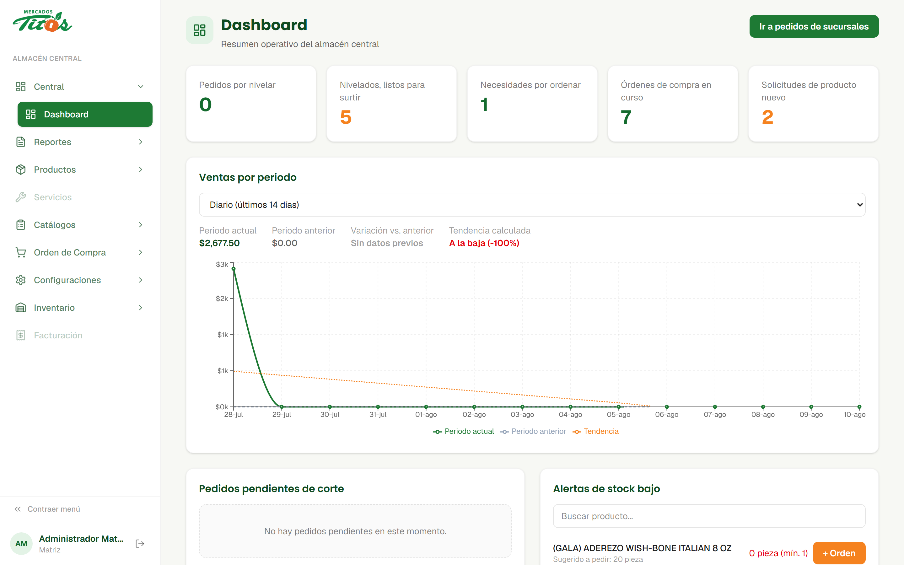

Tendencia · regresión lineal
Ventas por periodo con tendencia
El tablero compara el periodo actual contra el anterior (diario, semanal o mensual) y traza una línea de tendencia calculada por mínimos cuadrados que dice si las ventas van al alza o a la baja, y en qué porcentaje.
Antes: la tendencia se intuía; no había con qué medirla.